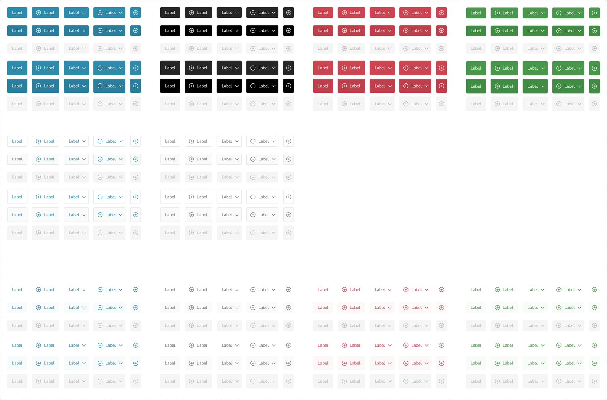
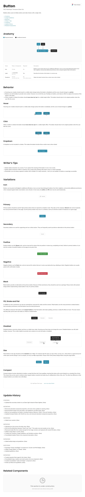

Overview
One platform, many products, no shared language
I co-built Terra, Ninety’s first unified design system, and led its continued evolution as Staff Product Designer. The work connects the Figma library, implemented components, and the product experiences that use them.
In October–November 2026, I focused on three connected problems: aligning Figma with Storybook, defining component behavior against real product use, and extending the system into AI and mobile. Storybook’s Terra section is the implementation source of truth.
Token Architecture
Shared tokens, with explicit architectural boundaries
Terra’s existing token library provides the shared foundation for component styling and themes. My recent work focused on replacing hard-coded values, correcting state treatments, and using existing tokens wherever possible.
The AI color work exposed an architectural boundary: Terra does not yet have an alias layer. The new purple ramp is named by hue, with its AI-only usage documented in guidelines. Keeping this distinction explicit avoids overstating the maturity of the token architecture.

Accessibility & tokens
Fix what can be fixed—and name what remains
I audited contrast across button types and states, correcting failing labels and icons with existing tokens. Customer-selected brand colors were outside the audit because their values are unknown at design time. I relinked hard-coded active fills and neutral hover styling to Terra tokens and recorded contrast results in the guidelines.
Terra’s focus ring—4px brand color at 20% opacity—was documented as failing the 3:1 non-text contrast requirement. The team agreed to retain one consistent app-wide focus state temporarily and address it across Terra later. Identifying the issue did not mean it was resolved.
I corrected navigation dark mode using existing tokens, checked existing Terra icons before adding new ones, and aligned Base Card selected and active states with a 16px corner radius.
Components & Documentation
Documentation that answers the next question
A component without documentation is just a picture. For each Terra component, we wrote documentation structured around how people actually use a system: anatomy (what the parts are and which are required), behavior (hover, click, and interaction rules), writer’s tips (how to label it in plain language), variations (when to reach for primary vs. secondary vs. destructive), and update history so consumers could trust the component was maintained.
Each documentation page named a point-of-contact owner and linked directly to the Figma source — small governance details that kept documentation alive instead of decorative. The update history was non-negotiable: a system without a visible changelog is a system that engineers don’t trust to update their implementations against.

Audit real use before defining the abstraction
Component work
Pagination: I audited Storybook and live product usage, rebuilt the component with Terra tokens and default, hover, and active states, and defined a responsive rule below 600px. Guidance covers large page counts, placement, mobile, labeled navigation, and aria-current.
Details Sheet and Bottom Sheet: research and team review led to two components with separate guidance and a shared content slot. I defined wide-screen behavior and a rule to hide the Maz panel when both panels cannot fit. An audit of detail panels across the app informed a header with slots covering about 80% of observed use cases; this is an audit estimate, not a measured adoption result.
Page Header and Global Top Bar: I inventoried titles, subtitles, actions, tabs, and filters across live pages. I designed scroll collapse and small-screen behavior, revising action placement after engineering raised concerns about overflow menus. The Filter Bar became a Page Header subcomponent, with a Popover for collapsed filters.
Buttons and Tabs: I simplified button properties and naming, added Full Width, separated Compact Button, and replaced the dropdown variant with an optional icon. For Tabs, I aligned effects, disabled behavior, icon color, and instance swaps, and documented long labels and active versus selected states.
Chip, Switch, Menu, and Search Input: I aligned Chip with Storybook, documented remaining Chip and Switch mismatches as backlog work, built the shared Menu rather than introducing a custom dropdown, and added guidance and tracking for Search Input. Popover was ready in Figma with Storybook implementation still in progress.
Governance in practice
Give each audience the information it needs
After engineering feedback, I separated component guidance from product requirements. Figma guidelines describe appearance and behavior with visuals; requirements and implementation notes live in records in the prototype repository. The side navigation also has its own product requirements document.
I wrote “Terra and the North Star” to connect the system to Ninety’s vision and values, alongside the governance charter. I also took a maturity self-assessment to establish a baseline for future system work.
For the sidebar transition, I labeled old and new versions clearly, merged the Figma branch, and published 18 library changes. I reorganized the library’s page structure and standardized section names so components were easier to locate.
Weekly design system syncs, a shared component tracker, current-state Jira tickets, and release announcements kept work visible. Announcements explicitly distinguish design completion from engineering implementation. I clarified ownership across core product, AI, and design systems and turned engineering review comments into component and guideline updates.
AI component family
Make AI recognizable without inventing another system
Maz had used the customer’s brand color, making AI indistinguishable from primary product UI. I proposed a dedicated purple ramp, added it to the token library, and documented its use for AI. Because Terra does not yet have an alias layer, engineering requested hue-based naming; the reservation for AI lives in the guidelines.
Engineering implemented the purple token in code. After team feedback on saturation, I explored softer alternatives and the team selected a softened purple. This separated the styling decision from a claim that a complete semantic alias architecture already existed.
I built the Maz composer from existing Terra pieces: prompt chips, a button launcher, and shared tokens, with active, placeholder, and disabled variants and documented micro-interactions. AI chips, prompts, and suggestion-detail popovers form one Maz family.
I applied Terra components and tokens across Maz Copilot, Profile, Agents, proactive suggestions, and support-entry explorations, keeping Figma and code aligned. Product prototyping became a way to test the system under real interaction demands.
Impact
What Terra made possible
The October–November work produced concrete system changes: a sidebar library release with 18 changes, rebuilt and documented components, button contrast corrections using existing tokens, an implemented purple token, and a mobile prototype delivered through TestFlight with engineering review.
Other work remains in progress: Storybook implementation for Popover, logged Chip and Switch mismatches, and a system-wide focus-ring fix. Release communications distinguish these states instead of treating design completion as shipped code.
No measured reduction in delivery time, accessibility rework, or adoption is available for this period. These outcomes describe delivered artifacts, implementation milestones, and documented decisions.
Terra in product work: the AI Agents case study shows how shared components supported a complete UX and UI, while product-specific challenges exposed gaps for the system backlog.